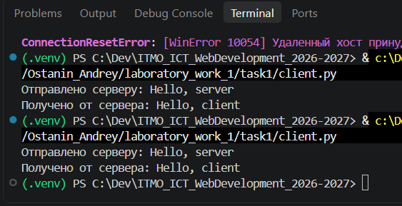
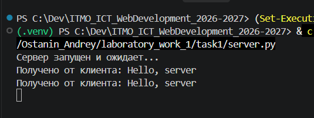
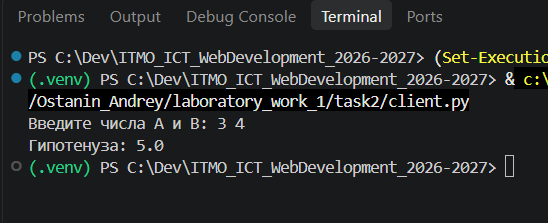
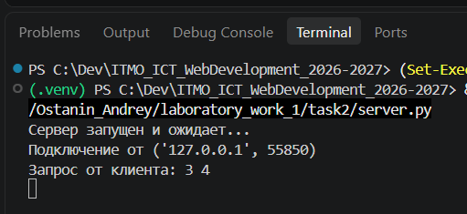
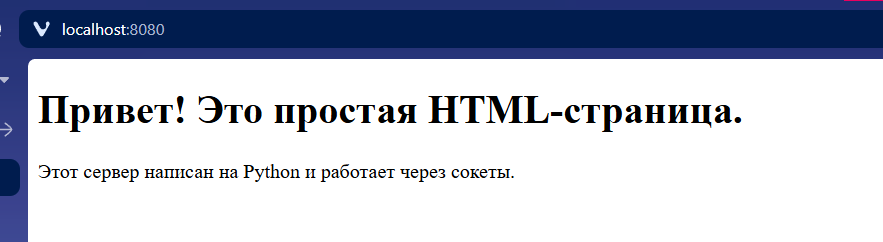
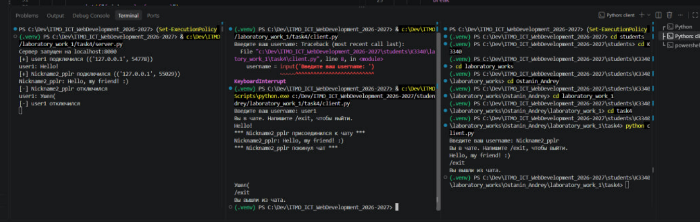
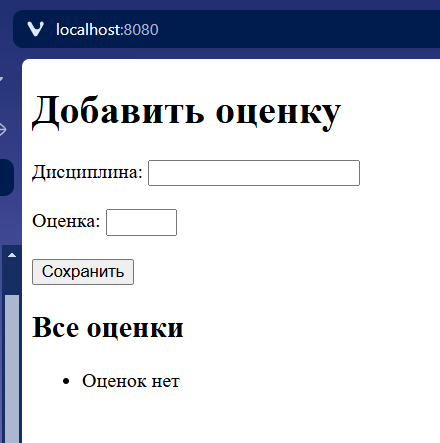
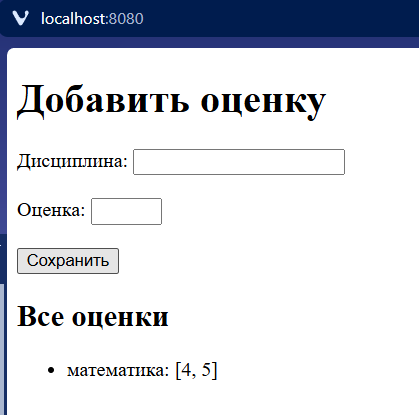
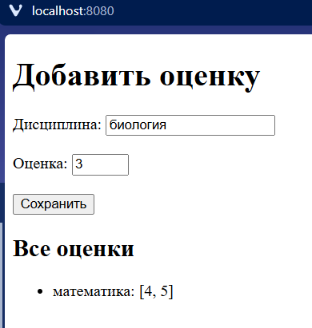
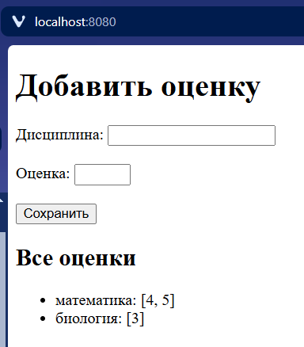

Лабораторная 1
Практическое задание 1
Реализовать клиентскую и серверную часть приложения. Клиент отправляет серверу сообщение «Hello, server», и оно должно отобразиться на стороне сервера. В ответ сервер отправляет клиенту сообщение «Hello, client», которое должно отобразиться у клиента.
# Серверная часть
import socket
# Создание сокета
server_socket = socket.socket(socket.AF_INET, socket.SOCK_DGRAM) # UDP
server_socket.bind(('localhost', 8080))
print("Сервер запущен и ожидает...")
# Получение и отправление данных
while True:
data, client_address = server_socket.recvfrom(1024)
print(f"Получено от клиента: {data.decode('utf-8')}")
server_socket.sendto(b"Hello, client", client_address)
# Клиентская часть
import socket
client_socket = socket.socket(socket.AF_INET, socket.SOCK_DGRAM)
server_address = ('localhost', 8080)
# Отправка сообщения
message = "Hello, server"
client_socket.sendto(message.encode('utf-8'), server_address)
print(f"Отправлено серверу: {message}")
# Получение ответа от сервера
data, server = client_socket.recvfrom(1024)
response = data.decode('utf-8')
print(f"Получено от сервера: {response}")
client_socket.close()
Проверка работоспособности:
Клиент

Сервер

Практическое задание 2
Реализовать клиентскую и серверную часть приложения. Клиент запрашивает выполнение математической операции, параметры которой вводятся с клавиатуры. Сервер обрабатывает данные и возвращает результат клиенту.
Мой вариант выпал на теорему Пифагора
# Клиент
import socket
input_data = input("Введите числа A и B: ")
# Создание TCP сокета
client_socket = socket.socket(socket.AF_INET, socket.SOCK_STREAM)
client_socket.connect(('localhost', 8080))
client_socket.sendall(input_data.encode())
response = client_socket.recv(1024).decode()
print(f"Гипотенуза: {response}")
client_socket.close()
# Сервер
import socket
import math
# Создание TCP сокета
server_socket = socket.socket(socket.AF_INET, socket.SOCK_STREAM)
server_socket.bind(('localhost', 8080))
server_socket.listen(1)
print("Сервер запущен и ожидает...")
while True:
# Установление соединения с клиентом
client_connection, client_address = server_socket.accept()
print(f"Подключение от {client_address}")
request = client_connection.recv(1024).decode()
print(f"Запрос от клиента: {request}")
# Считаем теорему Пифагора
a, b = map(int, request.split())
c = math.sqrt(a**2 + b**2)
# Отправка результата подключенным соединениям
client_connection.sendall(str(c).encode())
client_connection.close()
Проверка работоспособности:
Клиент

Сервер

Практическое задание 3
Реализовать серверную часть приложения. Клиент подключается к серверу и в ответ получает HTTP-сообщение, содержащее HTML-страницу, которую сервер подгружает из файла index.html.
Код для серверной части, в которой я создаю сокет по TCP и отправляю подключенному клиенту html страницу и необходимые заголовки
import socket
from pathlib import Path
HOST = 'localhost'
PORT = 8080
server_socket = socket.socket(socket.AF_INET, socket.SOCK_STREAM)
server_socket.bind((HOST, PORT))
server_socket.listen(5)
print(f"HTTP сервер запущен на {HOST}:{PORT}...")
html_bytes = Path(__file__).parent.joinpath('index.html').read_bytes()
while True:
client_connection, client_address = server_socket.accept()
print(f'Подключение от {client_address}')
request = client_connection.recv(2048).decode()
print(f'Запрос клиента:\n{request}')
headers = (
"HTTP/1.1 200 OK\r\n"
"Content-Type: text/html; charset=UTF-8\r\n"
f"Content-Length: {len(html_bytes)}\r\n"
"Connection: close\r\n"
"\r\n"
).encode('utf-8')
client_connection.sendall(headers + html_bytes)
client_connection.close()
А также index.html
<!DOCTYPE html>
<html>
<head>
<title>Простой сервер на Python</title>
</head>
<body>
<h1>Привет! Это простая HTML-страница.</h1>
<p>Этот сервер написан на Python и работает через сокеты.</p>
</body>
</html>
"""
Страница выводится нормально

Практическое задание 4
Реализовать двухпользовательский или многопользовательский чат.
Весь код для сервера целиком:
import socket
import threading
HOST = 'localhost'
PORT = 8080
server_socket = socket.socket(socket.AF_INET, socket.SOCK_STREAM)
server_socket.setsockopt(socket.SOL_SOCKET, socket.SO_REUSEADDR, 1)
server_socket.bind((HOST, PORT))
server_socket.listen()
lock = threading.Lock()
# Словарь {socket: username} — хранит активных пользователей
clients = {}
print(f"Сервер запущен на {HOST}:{PORT}")
def broadcast(message, exclude=None):
"""Рассылает сообщение всем, кроме отправителя."""
with lock:
for client in list(clients.keys()):
if client is exclude:
continue
try:
client.sendall(message.encode('utf-8'))
except OSError:
client.close()
clients.pop(client, None)
def handle_client(client_socket, address):
try:
nickname = client_socket.recv(1024).decode('utf-8').strip()
with lock:
clients[client_socket] = nickname
print(f"[+] {nickname} подключился ({address})")
broadcast(f"*** {nickname} присоединился к чату ***", exclude=client_socket)
while True:
data = client_socket.recv(1024)
if not data:
break
message = data.decode('utf-8').strip()
# Команда выхода
if message.lower() == '/exit':
break
print(f"{nickname}: {message}")
broadcast(f"{nickname}: {message}", exclude=client_socket)
except:
pass
finally:
with lock:
clients.pop(client_socket, None)
try:
client_socket.close()
except:
pass
print(f"[-] {nickname if 'nickname' in dir() else address} отключился")
broadcast(f"*** {nickname} покинул чат ***")
while True:
client_socket, address = server_socket.accept()
thread = threading.Thread(target=handle_client, args=(client_socket, address), daemon=True)
thread.start()
Далее разберем код по блокам
1) Инициализовация сокета
HOST = 'localhost'
PORT = 8080
server_socket = socket.socket(socket.AF_INET, socket.SOCK_STREAM)
server_socket.setsockopt(socket.SOL_SOCKET, socket.SO_REUSEADDR, 1)
server_socket.bind((HOST, PORT))
server_socket.listen()
2) Здесь мы защищаем словарь client от состояния гонки
lock = threading.Lock()
3) Функция, которая рассылает сообщение всем, кроме отправителя.
def broadcast(message, exclude=None):
with lock:
for client in list(clients.keys()):
if client is exclude:
continue
try:
client.sendall(message.encode('utf-8'))
except OSError:
client.close()
clients.pop(client, None)
4) Теперь рассмотрим функцию handle_client
def handle_client(client_socket, address):
try:
# Первым сообщением получаем имя пользователя
nickname = client_socket.recv(1024).decode('utf-8').strip()
# Добавляем нового пользователя в чат
with lock:
clients[client_socket] = nickname
print(f"[+] {nickname} подключился ({address})")
# Рассылка о новом участнике чата
broadcast(f"*** {nickname} присоединился к чату ***", exclude=client_socket)
# Цикл обработки сообщений от конкретного клиента в его отдельном потоке
while True:
data = client_socket.recv(1024)
if not data:
break
message = data.decode('utf-8').strip()
# Команда выхода
if message.lower() == '/exit':
break
print(f"{nickname}: {message}")
broadcast(f"{nickname}: {message}", exclude=client_socket)
except:
pass
finally:
with lock:
clients.pop(client_socket, None)
try:
client_socket.close()
except:
pass
print(f"[-] {nickname if 'nickname' in dir() else address} отключился")
broadcast(f"*** {nickname} покинул чат ***")
5) Инициализация соединения в новом потоке для новых пользователей
while True:
client_socket, address = server_socket.accept()
thread = threading.Thread(target=handle_client, args=(client_socket, address), daemon=True)
thread.start()
Также есть клиент.
import socket
import sys
import threading
HOST = 'localhost'
PORT = 8080
username = input('Введите ваш username: ')
client_socket = socket.socket(socket.AF_INET, socket.SOCK_STREAM)
client_socket.connect((HOST, PORT))
# Отправляем серверу свой ник первым сообщением
client_socket.sendall(username.encode('utf-8'))
def receive_messages():
while True:
try:
data = client_socket.recv(1024)
if not data:
print("\nСоединение закрыто сервером.")
break
print(data.decode('utf-8'))
except OSError:
break
client_socket.close()
sys.exit(0)
threading.Thread(target=receive_messages, daemon=True).start()
print("Вы в чате. Напишите /exit, чтобы выйти.")
while True:
try:
message = input()
except:
break
if message.lower() == '/exit':
break
try:
client_socket.sendall(message.encode('utf-8'))
except:
break
client_socket.close()
print("Вы вышли из чата.")
Пример работы

Практическое задание 5
Написать простой веб-сервер для обработки GET и POST HTTP-запросов с помощью библиотеки socket в Python. Сервер должен:
- Принимать и записывать информацию о дисциплине и оценке по дисциплине.
- Отдавать информацию обо всех оценках по дисциплинам в виде HTML-страницы.
Весь код серверной части
from pathlib import Path
import socket
from urllib.parse import parse_qs
HOST = 'localhost'
PORT = 8080
grades = {}
TEMPLATE = Path(__file__).parent.joinpath('index.html').read_text(encoding='utf-8')
server_socket = socket.socket(socket.AF_INET, socket.SOCK_STREAM)
server_socket.setsockopt(socket.SOL_SOCKET, socket.SO_REUSEADDR, 1)
server_socket.bind((HOST, PORT))
server_socket.listen()
print("Сервер запущен по адресу: localhost:8080 и ожидает...")
def render_page():
if not grades:
items = "<li>Оценок нет</li>"
else:
items = "".join(
f"<li>{subject}: {marks}</li>" for subject, marks in grades.items()
)
return TEMPLATE.replace("{{GRADES}}", items)
def parse_request(request):
head, _, body = request.partition(b"\r\n\r\n")
print(request)
lines = head.decode('utf-8').split("\r\n")
method, path, _ = lines[0].split()
headers = {}
for line in lines[1:]:
if ':' in line:
k, v = line.split(':', 1)
headers[k.strip().lower()] = v.strip()
return method, path, headers, body
def make_response(status, body, content_type="text/html; charset=utf-8"):
headers = (
f"HTTP/1.1 {status}\r\n"
f"Content-Type: {content_type}\r\n"
f"Content-Length: {len(body)}\r\n"
"Connection: close\r\n"
"\r\n"
).encode('utf-8')
return headers + body
while True:
client_connection, client_address = server_socket.accept()
print(f"Подключение от {client_address}")
try:
request = client_connection.recv(1024)
method, path, headers, body = parse_request(request)
print(f"{method} {path}")
if method == "GET" and path == "/":
response = make_response("200 OK", render_page().encode('utf-8'))
elif method == "POST" and path == "/":
params = parse_qs(body.decode('utf-8'))
subject = params.get('subject', [''])[0].strip()
grade = params.get('grade', [''])[0].strip()
if subject and grade.isdigit():
if subject not in grades:
grades[subject] = []
grades[subject].append(int(grade))
print(f"Сохранено: {subject} = {grade}")
redirect_headers = (
"HTTP/1.1 303 See Other\r\n"
"Location: /\r\n"
"Content-Length: 0\r\n"
"Connection: close\r\n"
"\r\n"
).encode('utf-8')
response = redirect_headers
else:
response = make_response(
"404 Not Found",
b"<h1>404 Not Found</h1>",
)
client_connection.sendall(response)
except Exception as e:
print(f"Ошибка обработки запроса: {e}")
finally:
client_connection.close()
И html шаблон
<!DOCTYPE html>
<html lang="ru">
<head>
<meta charset="UTF-8">
<title>Оценки по дисциплинам</title>
</head>
<body>
<h1>Добавить оценку</h1>
<form method="POST" action="/">
<label>Дисциплина: <input type="text" name="subject" required></label><br><br>
<label>Оценка: <input type="number" name="grade" min="1" max="5" required></label><br><br>
<button type="submit">Сохранить</button>
</form>
<h2>Все оценки</h2>
<ul>
{{GRADES}}
</ul>
</body>
</html>
Далее также разберем важные моменты из кода
1) Рендер страницы уже с оценками
def render_page():
if not grades:
items = "<li>Оценок нет</li>"
else:
items = "".join(
f"<li>{subject}: {marks}</li>" for subject, marks in grades.items()
)
return TEMPLATE.replace("{{GRADES}}", items)
2) parse_request разбирает сырой HTTP-запрос в удобные части
def parse_request(request):
head, _, body = request.partition(b"\r\n\r\n")
print(request)
lines = head.decode('utf-8').split("\r\n")
method, path, _ = lines[0].split()
headers = {}
for line in lines[1:]:
if ':' in line:
k, v = line.split(':', 1)
headers[k.strip().lower()] = v.strip()
return method, path, headers, body
3) make_response собирает корректный HTTP-ответ из частей
def make_response(status, body, content_type="text/html; charset=utf-8"):
headers = (
f"HTTP/1.1 {status}\r\n"
f"Content-Type: {content_type}\r\n"
f"Content-Length: {len(body)}\r\n"
"Connection: close\r\n"
"\r\n"
).encode('utf-8')
return headers + body
4) Главный цикл для обработки запросов
while True:
client_connection, client_address = server_socket.accept()
print(f"Подключение от {client_address}")
try:
request = client_connection.recv(1024)
method, path, headers, body = parse_request(request)
print(f"{method} {path}")
# Отдать страницу по GET методу
if method == "GET" and path == "/":
response = make_response("200 OK", render_page().encode('utf-8'))
# Принять новую оценку
elif method == "POST" and path == "/":
params = parse_qs(body.decode('utf-8'))
subject = params.get('subject', [''])[0].strip()
grade = params.get('grade', [''])[0].strip()
# Добавление оценки
if subject and grade.isdigit():
# # Проверяет, что дисциплина не пустая и оценка — число. Если такой дисциплины ещё нет, то создает
if subject not in grades:
grades[subject] = []
grades[subject].append(int(grade))
print(f"Сохранено: {subject} = {grade}")
redirect_headers = (
"HTTP/1.1 303 See Other\r\n"
"Location: /\r\n"
"Content-Length: 0\r\n"
"Connection: close\r\n"
"\r\n"
).encode('utf-8')
response = redirect_headers
# При иных запросах
else:
response = make_response(
"404 Not Found",
b"<h1>404 Not Found</h1>",
)
client_connection.sendall(response)
except Exception as e:
print(f"Ошибка обработки запроса: {e}")
finally:
client_connection.close()
Проверка работоспособности



